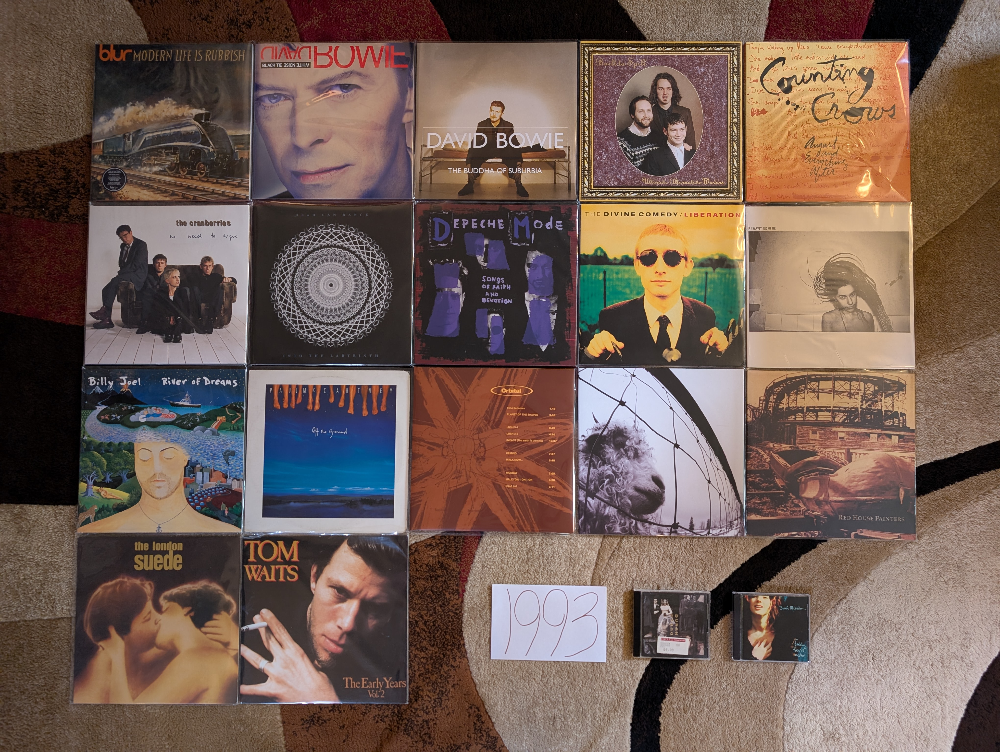

1993 Albums¶
It was the start of my teenage years, and for the first time I remember really engaging with pop music, albeit the pop music of years gone by. I also remember connecting with two of the records below, which were both by legacy artists. Those artists, Billy Joel and Paul McCartney would play a key role in my developing musical tastes, so much so that I feel like those artists deserve attention in my footnotes to the 90s as some sort of origin story. The rest of these albums would be discovered in the decades to come, and I even vividly remember hating singles off of three of them in the year of release!
This is the conclusion of a period of transition between the 80s and the 90s, and by the end of the year we were clearly in a new era. The grunge sound was almost like a brief palette cleanser between the brighter, gaudier 80s and the heart of the 1990s that would strive toward authenticity and diversity.
{kind=link}
Modern LIfe is Rubbish by Blur - This was back in the days when an artist’s first album could be a limited success and they still get a second crack at it. Blur made the best of the opportunity. Gone is the poorly executed on shoegaze and jangle sounds, and their trademark quirky Britpop whimsey takes over to great effect. The start of a classic five album sequence. [Memory: When they did the Blur reissues in the 2012 timeframe, it made me really think about which of the albums were truly among my favorites. This was the first one I ran out and got. I remember being startled buy the price at nearly 30 dollars. If I only knew how high prices would go.]
The Buddha of Suburbia by David Bowie - Sometimes albums become legendary mostly because of their obscurity. In the case of this one, it is because it is both obscure and amazing. This is the return of the “real Bowie” after the poor showings in the late 80s and the curious diversions of Tin Machine. It is the clear superior of the two records he would release this year. The soundtrack format seems like it has freed him to experiment with new jazz and electronic sounds. This is where 90s Bowie started to come into form. [Memory: I had known about this for years before I actually gave it a listen. It would be the rise of streaming that would allow me to experience what I had always heard described with glowing terms. Maybe not as amazing as it was billed in its days as an obscurity, but pretty close!]
White Tie, Black Noise by David Bowie - A transitionary work that sounds like an artist who is trying to reinvent themselves, while trying to reconnect with their prior commercial success. The opening track “The Wedding” with its break-beats and electronic groove makes it clear this is a product of the 90s, and is followed by “You’ve Been Around”, which sounds like it could have been left off Never Let Me Down. Lead single “Jump They Say” and the Walker Brothers cover “Night Flights” feel like the perfect fusion of 80s and 90s Bowie. Not as universally successful of the records to come, but a great return after almost a decade away from making good new music. [Memory: I remember VH1 playing the “Jump They Say” video over and over in the summer of ‘93. I really disliked the song at the time. I just wasn’t ready for my favorite artist yet.]
Ultimate Alternative Wavers by Built to Spill - They would later specialize in smooth, pop tinged indie rock, but their first, far rougher around the edges album will always be my favorite. Sounding a bit like a more psychedelic version of Guided by Voices or perhaps a punkier Modest Mouse, this is early 90s indie at its finest. [Memory: I had become interested in this band via their later work as heard on satellite radio in the mid-2000s. The only album I could find on eMusic was this early gem, and it was even more to my taste.]
August and Everything After by Counting Crows - This will never be considered “cool” but it is a well put together and very enjoyable record. It probably sounds more like 1993 than any other album out there. “Mr. Jones” has perhaps worn out its welcome, but the slower moments like “Round Here”, “Perfect Blue Buildings”, and especially “Sullivan Street” have aged pretty darn well. [Memory: I saw these guys (with opener Sixpence and None the Richer no less) at Messiah College in 2003. It was ten years after their high water mark, and they already felt like a legacy act. It was a pretty great show that made me realize I liked these guys more that I tended to admit. This album was one of the last I added to the list, and it was one of the last that I realized I wanted on vinyl. It will never be “cool” to like this album, and I need to get over that.]
Everybody Else is Doing it, So Why Can’t We? by The Cranberries - I love the way this record sounds. It has the jangly, reverb heavy atmospherics of the great 4AD releases, stunningly beautiful vocal overdubs, and an unmistakably Irish soul that adds up to one of the finest productions of all time. The songs are very strong too, and this is one of the finest debuts of all time. [Memory: I wasn’t ready for this when it came out. I remember making fun of the album when my sister listened to it back then, particularly the song “Linger”. 30 years later I like few albums more.]
Into the Labyrinth by Dead Can Dance - At times this one gets “gothy” to the point where it risks self-parody, but it manages to hold things together. At the close of their first decade they are dialing everything up to 11 and we are seeing lots of the world music influences that infiltrated this kind of music in the mid-90s. After this they would head in a direction with far less of their early darkwave sound, and I wouldn’t follow. [Memory: In the late 90s and early 2000s I was very into the band Delerium and sought out related acts that I found listed in an AllMusicGuide genre page. I bought a used CD of this album during one of my tours of Cleveland area CD Exchange locations in 2003. In the years ahead I would work backward into their 80s albums to find one of my favorite acts.]
Songs of Faith and Devotion by Depeche Mode - I am one of the view people in the world who strongly prefers this follow-up to the classic Violator that preceded it. I think it is the stronger, more hard-edged electro-industrial edge on songs like “I Feel You” and “Rush” that make this the better record for me. Yet, we also still have the best elements of the synthop heavy, 80s DM on tracks particularly “Mercy in You”. Of course, we also have an outstanding tender moment with Martin Gore on “One Caress”. This is the peak of their 90s work for me. [Memory: I remember buying a CD of this at the Reading Boarders in the 1999-2000 time-frame. My parents were very concerned about the record based on the cover and title. I remember one of my sisters friends convincing them that it was wholesome, legacy act. In retrospect, my parents probably wouldn’t have been OK with the content of this album. I am in debt to that person for helping me get access to this amazing record.]
Liberation by The Divine Comedy - The official start for this guy, and a solid collection of chamber pop songs out of the gate. While there is a bit more filler here than what we would come to expect, the high points are among Neil Hannon’s finest work, especially “Your Daddy’s Car” and “Queen of the South”. This would be the last time we would hear the comic new wave of tracks of “Europop” until 2019’s Office Politics. [Memory: This was one of the albums by Hannon that I didn’t fully appreciate until the vinyl reissues came out in 2020. I’m so glad I bought them all. They are all great records.]
Duran Duran (The Wedding Album) by Duran Duran - The first of several times these guys have re-invented themselves and seemingly returned from the dead. In retrospect this isn’t as significant of a change as it seemed. The opener “Too Much Information” is almost like a song from Rio with some accoustic guitar overdubs and crunchy 90s drums. The big hits, particularly the massive “Ordinary World” was a more significant diversion to a very 1990s kind of eclecticism, but still Duran Duran. This is where they proved that they were true pop geniuses that would stand the test of time. [Memory: At the time, I was very disappointed by this album, particularly “Come Undone” which I despised seeing on MTV and VH1. I was already a huge fan of their 80s work, and this wasn’t doing it for me. Somehow I didn’t recognize that “Ordinary World”, which I enjoyed quite a bit, was by them. In the late 90s, my sister gave me her copy of this and after reconsideration it became an all-time favorite of mine. This is the album that I want most on vinyl.]
Rid of Me by PJ Harvey - The first signs of exactly how eclectic her career was going to be. There are elements of the bluesy punk rock we saw on Dry, but there are so many other things going on here, from chamber rock to screaming art-punk. This will never stop being a challenging, rewarding listen. [Memory: Very early in the vinyl revival (circa 2007) there was a teased reissue of this that never ended up being made. I remember asking Greg at City Lights to keep an eye out for me, and he halfheartedly tried to get a copy. We wouldn’t see this re-issue arrive until the comprehensive repress campaign in 2017.]
River of Dreams by Billy Joel - There is something to be said for knowing when to call it quits. This doesn’t all work, but it is still a strong record from an artist who realized they didn’t have another one in them. Of course, at the time of this writing 30+ years later, he is still touring this material and what came before. It is a fascinating decision for the artist to draw a line and say I am done creating. It is also interesting to realize that with songs like “No Man’s Land” and “Shades of Grey”, the artist is still trying to work out the New Wave sounds of the 1980s. The title track is without question an attempt to tap into the multicultural, eclecticism of the contemporary scene. A master imitator, the final work by William H Joel makes a strong case for his position as the Irving Berlin of the late 20th century. The fact that the last song “Famous Last Words” unambiguously establishes this as the capstone of his songwriting gives his career a kind of conceptual unity that even someone like David Bowie can’t claim to. [Memory: I was a massive fan of his work around this time in my life. I remember my brother telling me that he had heard a new Billy Joel song playing when he was at the car wash, and I listened to the radio constantly until I heard it as well. I remember my cousin (also a big fan) delivering me a copy of the album unprompted on the day of release. In many ways, this was the moment when I fully engaged with the excitement of pop music. All my explorations from the Beatles to King Crimson to even Nine Inch Nails have in some way been branching outward from this release.]
Off the Ground by Paul McCartney - This album is the best demonstration of the strengths and weaknesses of one of the all time greats. The lyrics and themes are often too obvious (“Looking for Changes”) and sometimes downright hokey (“Biker Like an Icon”), but the melodies are consistently interesting and stunningly beautiful (pretty much the whole thing, but holy moly “Hope of Deliverance” is masterful). The sounds of comfortable middle age, Linda’s illness and death would be the unfortunate perturbation towards more meaningful themes in the records to come. [Memory: This album was a big part of my summer of 1993. I have happy memories of listening to this (right after the hits compilation All The Best which was in the same CD clip) while I played Super Mario All-Stars on the SNES. I remember jamming the mildly psychedelic hidden track “Cosmically Conscious” on my sisters boombox through some old walkman headphones. I remember seeking out the CD single to finally hear the full version of that mysterious track. I remember writing an analysis of the cheesy lyrics to “Peace In the Neighborhood” in middle school English class. This isn’t a perfect album, but there are so many larval elements of the kinds of music I would favor as my tastes developed. It took a while for me to aknowlege this in adulthood as one of my favorites, but there is no question this is a fundamental influence on my listening. In 2025 I imported a vinyl copy of this from Columbia, with full confidence there will never be a reissue. I have a deep relationship with this album that few people do.
Fumbling Towards Ecstasy by Sarah McLachlan - The founder of Lilith Fair peaked here, and on some level, would never reach these heights again. A delightful combination of folk, rock guitars, and electronics, it manages to find the optimal place between smoothness and musical interest. “Possession” will always be among my very favorite songs. [Memory: It is hard to think of VH1 in the early 90s without thinking about the song “Possession” which was on there nearly non-stop.]
II (The Brown Album) by Orbital - Along with In Sides, this is almost all I need from these guys, and perhaps the whole genre of techno. It is a case where the form was done so well, anything else just sounds not as good. There is something that feels so futuristic and positive about the whole record that also makes it quintessentially 1990s music. [Memory: It was hard to get their music in the US in the early 2000s. For a long time, all I had was a best of compilation that I found at a Cleveland area CD and Tape Exchange. It wasn’t until I could import CDs using Amazon that I had access to all the albums.]
Vs. by Pearl Jam - Their career has always had tension between polished professionalism and rawer, more garage influences under the surface. While their debut was dominated by the polish, this is where the rawness started to show though more. Some fantastic rockers here like “Go”, “Animal”, and “Blood”, but there are also some gentler, more folky songs like “Daughter”, “Dissident”, and of course the legendary “Elderly Woman Behind the Counter in a Small Town”. In many ways this is where they established the sound that would dominate their work for decades to come. [Memory: In 1994, the entirety of my middle school was ushered to the auditorium for an assembly. The state was mostly covered with black fabric, with the exception of a square projection screen, and mysterious electronic equipment was setup in the middle of the seating. When the lights were turned down, a laser drew a cartoon of a headbanging skateboarder while the sounds of “Go” blared in the auditorium. For some reason the school administration decided to treat us to a laser light show set to the hard rock tunes of the day. It was awesome!]
Red House Painters (I) by Red House Painters - [1993 FAVORITE] - A lot has been written about the “beautiful sadness” captured in these songs, and it is absolutely true. It perhaps makes it more palatable to know that the artist is in a much better place now. That said, I don’t know that anything captures quiet despair quite like the songs “Katy Song” or “Mother”. The fuzzy, raw Albini like production really helps set the right mood. I have to be in the right mood for this, but when I am… [Memory: While writing about this record, I remembered a concert that I had forgot about. I saw Mark Kozelek play the 2010 Noise Pop Festival in San Francisco, and I was really upset that he played nothing from this record.]
Siamese Dream by Smashing Pumpkins - Is this the most 90s record ever made? Those crunching guitars and ambiguously psychedelic production values certainly make a strong case. I prefer the meandering experimentation of their next album just a bit more, but “Today” might still be their absolute top song. [Memory: Talk about a record that takes me back to middle school. I wasn’t even that into them, but you just couldn’t avoid it. It was everywhere. Everyone talks about rock being dead now, but I feel like rock certainly hasn’t dominated the popular consciousness again, since it did with this release.]
The London Suede by Suede - The more glammy Britpop acts are the missing link between the 90s and the early 2000s indie sleaze era. Chief among them are Pulp and these guys. There albums have always sounded kind of the same to me, and this is all I need. “Metal Mickey” is an absolute highlight. [Memory: When I went to london for the first time in 2007 I went to an HMV with the express intent to buy music I couldn’t get back home. I came home with the debut by Howling Bells and a singles compilation by this group. I can’t imagine a more English record to come back with.]
The Early Years, Vol 2 by Tom Waits - I think it says something that the only album I like by this guy is a compilation of work before his first official release. I much prefer the straight ahead singer-songwriter material, and I like it here even more than the records, without all the polish and studio gloss. “Ol’55” is one of the greatest songs ever written, and this spare acoustic performance is the definitive one. [Memory: My girlfriend circa 2004 loaned me a stack of CDs. This was pretty much the only one I really like from the whole lot, and it has stuck with me for the last few decades, about 20 years longer than the relationship.]